Chapter 16 plotnine
16.1 Histogram
16.1.1 1xNumeric
plotnine.ggplot( dataframe, aex(x='colName')) + geom_histogram( bins=10 )
plotnine.ggplot( dataframe, aex(x='colName')) + geom_histogram( binwidth=? )plotnine.options.figure_size = (3, 3)
ggplot(mydf, aes(x='value1')) + geom_histogram() # default bins = 10## <ggplot: (184688908319)>
##
## C:\PROGRA~3\Anaconda3\lib\site-packages\plotnine\stats\stat_bin.py:95: PlotnineWarning: 'stat_bin()' using 'bins = 8'. Pick better value with 'binwidth'.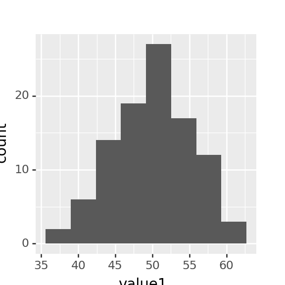
ggplot(mydf, aes(x='value1')) + geom_histogram(bins = 15)## <ggplot: (184691650997)>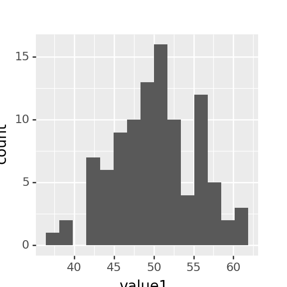
ggplot(mydf, aes(x='value1')) + geom_histogram(binwidth = 3)## <ggplot: (184691583979)>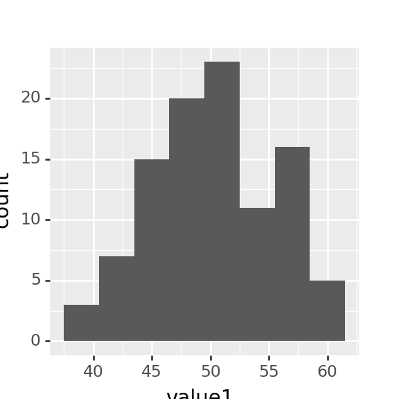
16.1.2 1xNumeric + 1xCategorical
plotnine.ggplot( dataframe,
aes(x='colName'),
fill='categorical-alike-colName')
+ geom_histogram()ggplot(mydf, aes(x='value1', fill='grp')) + geom_histogram(bins=15)## <ggplot: (184691575068)>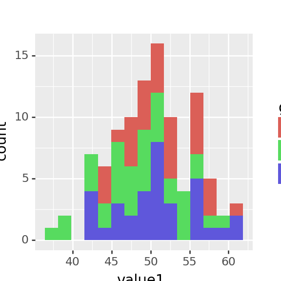
16.2 Scatter Plot
16.2.1 2x Numeric
ggplot(mydf, aes(x='value1',y='value2')) + geom_point()## <ggplot: (184688901075)>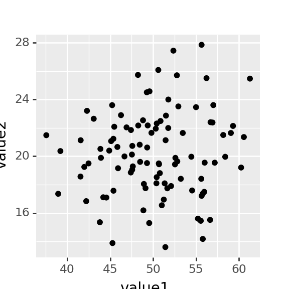
16.2.2 2x Numeric + 1x Categorical
ggplot( DataFrame, aes(x='colName1',y='colName2'))
+ geom_point( aes(
color='categorical-alike-colName',
size='numberColName'
))ggplot(mydf, aes(x='value1',y='value2')) + geom_point(aes(color='grp'))## <ggplot: (184691590449)>
ggplot(mydf, aes(x='value1',y='value2',color='grp')) + geom_point()## <ggplot: (184691395127)>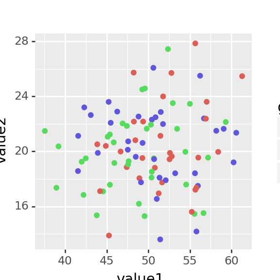
ggplot(mydf, aes(x='value1',y='value2')) + \
geom_point(aes(
color='grp'
))## <ggplot: (184691498054)>16.2.3 2x Numeric + 1x Numeric + 1x Categorical
ggplot(mydf, aes(x='value1',y='value2')) + \
geom_point(aes(
color='grp', size='value3'
))## <ggplot: (184690767556)>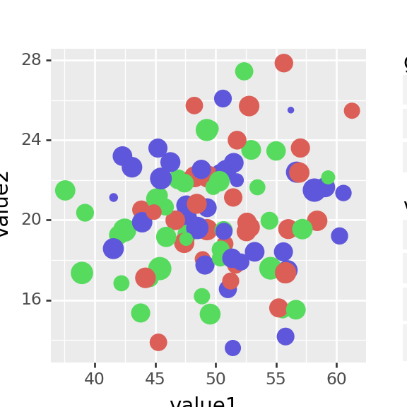
16.2.4 Overlay Smooth Line
ggplot(mydf, aes(x='value1', y='value2')) + \
geom_point() + \
geom_smooth() # default method='loess'## <ggplot: (184691636291)>
##
## C:\PROGRA~3\Anaconda3\lib\site-packages\plotnine\stats\smoothers.py:321: PlotnineWarning: Confidence intervals are not yet implemented for lowess smoothings.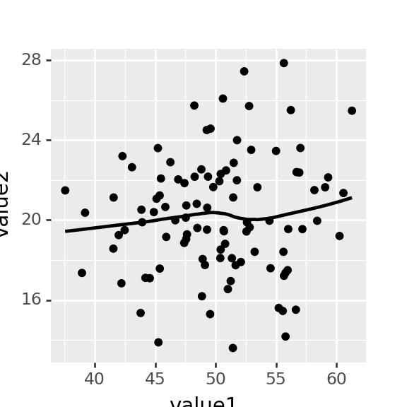
ggplot(mydf, aes(x='value1', y='value2',fill='grp')) + \
geom_point() + \
geom_smooth(
se=True,
color='red',
method='lm',
level=0.75)## <ggplot: (184691587762)>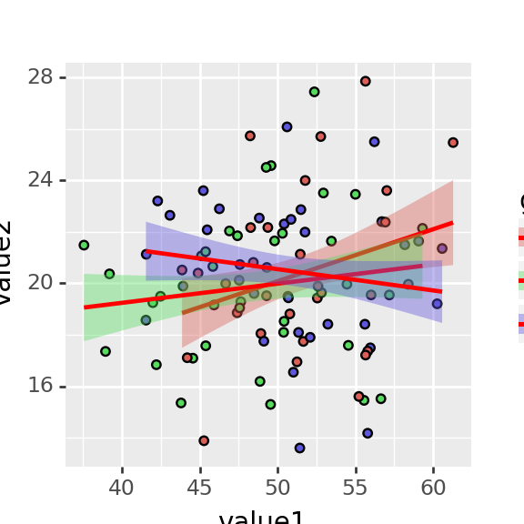
16.3 Line Chart
16.3.1 2x Numeric Data
ggplot (mydf.head(15), aes(x='value1', y='value2')) + geom_line()## <ggplot: (184691027917)>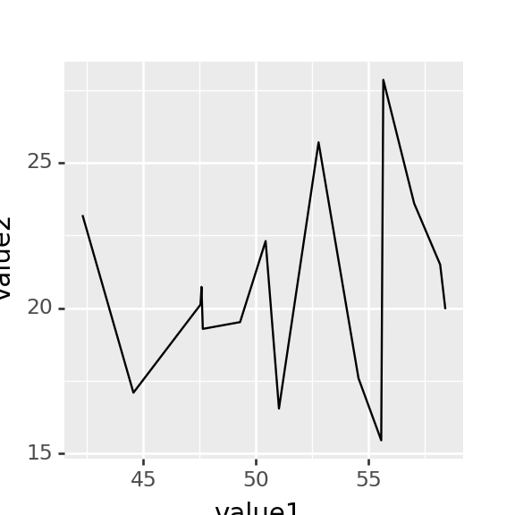
16.3.2 1x Numeric, 1x Categorical
ggplot (mydf.head(15), aes(x='dept', y='value1')) + geom_line()## <ggplot: (184690957632)>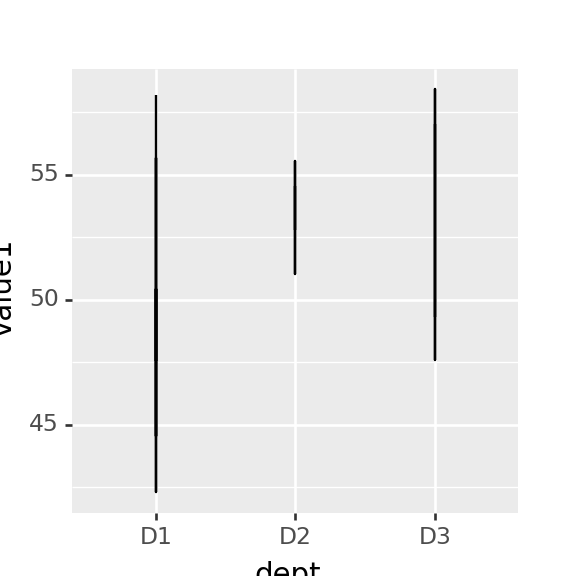
ggplot (mydf.head(30), aes(x='dept', y='value1')) + geom_line( aes(group=1))## <ggplot: (184692008003)>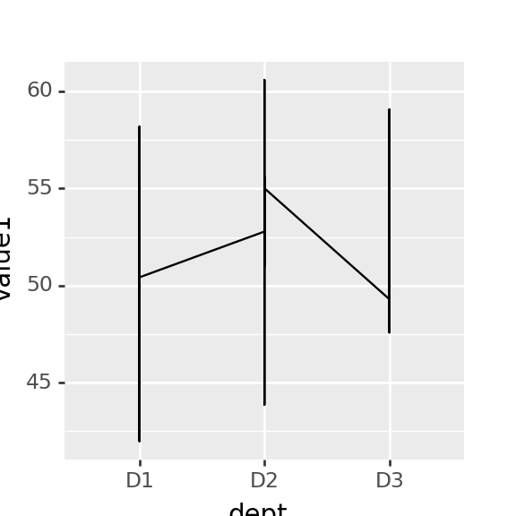
16.3.3 2x Numeric, 1x Categorical
ggplot (mydf.head(15), aes(x='value1', y='value2')) + geom_line( aes(color='grp'),size=2)## <ggplot: (184690816163)>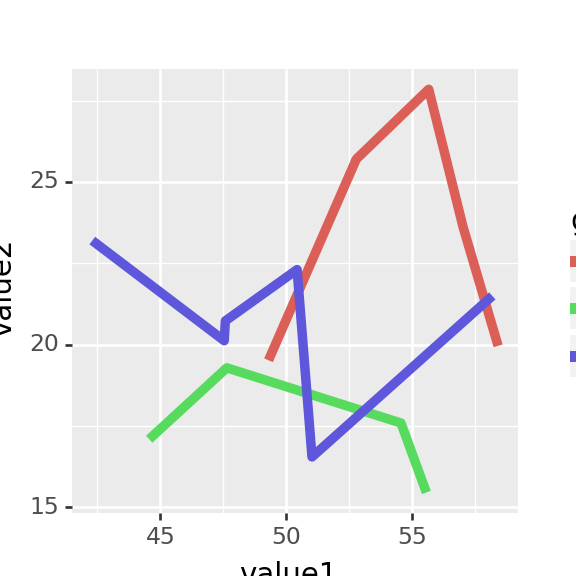
16.4 Bar Chart
16.4.0.1 1x Categorical
Single categorical variable produces frequency chart.
tmpdf = mydf.groupby(['comp'],as_index=False).count()
tmpdf## comp dept grp value1 value2 value3
## 0 C1 38 38 38 38 38
## 1 C2 32 32 32 32 32
## 2 C3 30 30 30 30 30tmpdf.info()## <class 'pandas.core.frame.DataFrame'>
## RangeIndex: 3 entries, 0 to 2
## Data columns (total 6 columns):
## # Column Non-Null Count Dtype
## --- ------ -------------- -----
## 0 comp 3 non-null object
## 1 dept 3 non-null int64
## 2 grp 3 non-null int64
## 3 value1 3 non-null int64
## 4 value2 3 non-null int64
## 5 value3 3 non-null int64
## dtypes: int64(5), object(1)
## memory usage: 272.0+ bytesggplot (tmpdf, aes(x='comp', y='grp')) +geom_col()## <ggplot: (184688582138)>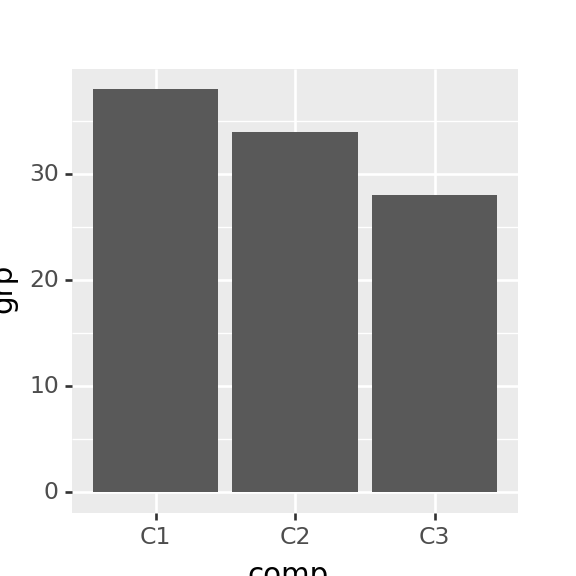